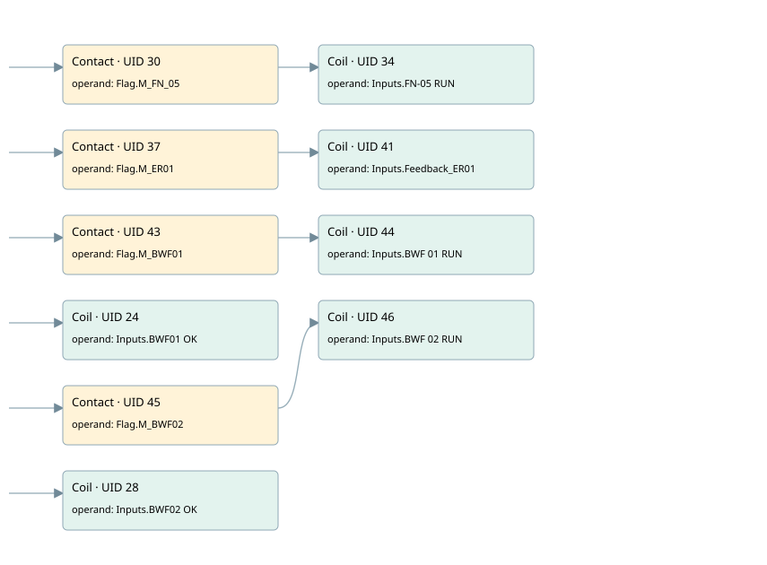

motors simulated
simulation · 검색 색인 순서 8 · 원본 내부 NID 추정 5
백업 PLF 원본의 3000331 바이트 위치에서 복원한 XML. 검색 문서 1086의 객체 키 161022007728000000000000와 연결했다. 이름 해석 10/10개. 남은 RefId는 상수 또는 미해석 참조다.
연결 구조 다시 그리기
원본 Part/PCon/Wire를 이용한 연결도다. TIA 화면의 래더 배치 또는 실행 결과를 재현한 그림은 아니다. 핀 연결은 아래 표와 원본 XML을 기준으로 읽는다. 노드 위에 마우스를 두면 피연산자 이름을 볼 수 있다.

접점·코일·블록과 피연산자
| Part UID | Gate | Negated 핀 | 연결 피연산자 |
|---|---|---|---|
| 30 | Contact | operand = Flag.M_FN_05 | |
| 34 | Coil | operand = Inputs.FN-05 RUN | |
| 37 | Contact | operand = Flag.M_ER01 | |
| 41 | Coil | operand = Inputs.Feedback_ER01 | |
| 43 | Contact | operand = Flag.M_BWF01 | |
| 44 | Coil | operand = Inputs.BWF 01 RUN | |
| 24 | Coil | operand = Inputs.BWF01 OK | |
| 45 | Contact | operand = Flag.M_BWF02 | |
| 46 | Coil | operand = Inputs.BWF 02 RUN | |
| 28 | Coil | operand = Inputs.BWF02 OK |
접점 경로를 펼친 조건식
Contact·O/A·비교기의 원본 연결을 읽기 쉽게 펼친 보조 해석이다. POWER는 전원 레일 시작을 뜻한다. 호출 블록·에지·타이머의 내부 동작과 다중 쓰기 순서는 이 표로 실행 검증하지 않았다. 미해석 핀과 RefId는 원문 연결표에서 확인한다.
| UID | 동작 | 대상 | 원본 접점 경로 | 내용 |
|---|---|---|---|---|
| 34 | Coil | Inputs.FN-05 RUN | Flag.M_FN_05 | 조건에 따른 Coil 기록 |
| 41 | Coil | Inputs.Feedback_ER01 | Flag.M_ER01 | 조건에 따른 Coil 기록 |
| 44 | Coil | Inputs.BWF 01 RUN | Flag.M_BWF01 | 조건에 따른 Coil 기록 |
| 24 | Coil | Inputs.BWF01 OK | POWER | 조건에 따른 Coil 기록 |
| 46 | Coil | Inputs.BWF 02 RUN | Flag.M_BWF02 | 조건에 따른 Coil 기록 |
| 28 | Coil | Inputs.BWF02 OK | POWER | 조건에 따른 Coil 기록 |
원본 배선 연결
| Wire UID | 동일 Wire 연결 끝점 |
|---|---|
| 21 | Powerrail {} ↔ Part 30.in ↔ Part 37.in ↔ Part 43.in ↔ Part 24.in ↔ Part 45.in ↔ Part 28.in |
| 29 | ORef 31 (Flag.M_FN_05) ↔ Part 30.operand |
| 32 | Part 30.out ↔ Part 34.in |
| 33 | ORef 35 (Inputs.FN-05 RUN) ↔ Part 34.operand |
| 36 | ORef 38 (Flag.M_ER01) ↔ Part 37.operand |
| 39 | Part 37.out ↔ Part 41.in |
| 40 | ORef 42 (Inputs.Feedback_ER01) ↔ Part 41.operand |
| 56 | ORef 49 (Flag.M_BWF01) ↔ Part 43.operand |
| 48 | Part 43.out ↔ Part 44.in |
| 58 | ORef 50 (Inputs.BWF 01 RUN) ↔ Part 44.operand |
| 23 | ORef 25 (Inputs.BWF01 OK) ↔ Part 24.operand |
| 59 | ORef 51 (Flag.M_BWF02) ↔ Part 45.operand |
| 53 | Part 45.out ↔ Part 46.in |
| 61 | ORef 52 (Inputs.BWF 02 RUN) ↔ Part 46.operand |
| 27 | ORef 47 (Inputs.BWF02 OK) ↔ Part 28.operand |
식별자 해석 근거 10개
| ORef UID | RefId | 이름 | IdentXmlPart 파일 | 해석 방법 |
|---|---|---|---|---|
| 31 | 155 | Flag.M_FN_05 | 0635-IdentXmlPart.xml | UID/RID + search-text + NID agreement |
| 35 | 146 | Inputs.FN-05 RUN | 0635-IdentXmlPart.xml | UID/RID + search-text + NID agreement |
| 38 | 156 | Flag.M_ER01 | 0635-IdentXmlPart.xml | UID/RID + search-text + NID agreement |
| 42 | 148 | Inputs.Feedback_ER01 | 0635-IdentXmlPart.xml | UID/RID + search-text + NID agreement |
| 49 | 157 | Flag.M_BWF01 | 0635-IdentXmlPart.xml | UID/RID + search-text + NID agreement |
| 50 | 150 | Inputs.BWF 01 RUN | 0635-IdentXmlPart.xml | UID/RID + search-text + NID agreement |
| 25 | 221 | Inputs.BWF01 OK | 0635-IdentXmlPart.xml | UID/RID + search-text + NID agreement |
| 51 | 158 | Flag.M_BWF02 | 0635-IdentXmlPart.xml | UID/RID + search-text + NID agreement |
| 52 | 152 | Inputs.BWF 02 RUN | 0635-IdentXmlPart.xml | UID/RID + search-text + NID agreement |
| 47 | 222 | Inputs.BWF02 OK | 0635-IdentXmlPart.xml | UID/RID + search-text + NID agreement |
검색 코드 보조 자료
참조 명칭을 찾기 위한 자료이며 실행 순서나 AND/OR 관계는 위 연결표로 확인한다.
"flag".m_fn_05 "inputs"."fn-05 run" "flag".m_er01 "inputs".feedback_er01 "flag".m_bwf01 "inputs"."bwf 01 run" "inputs"."bwf01 ok" "flag".m_bwf02 "inputs"."bwf 02 run" "inputs"."bwf02 ok"